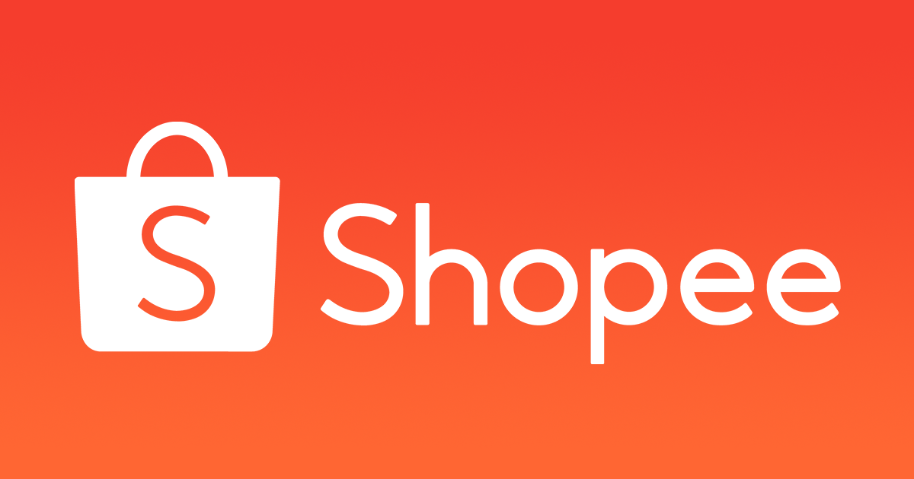
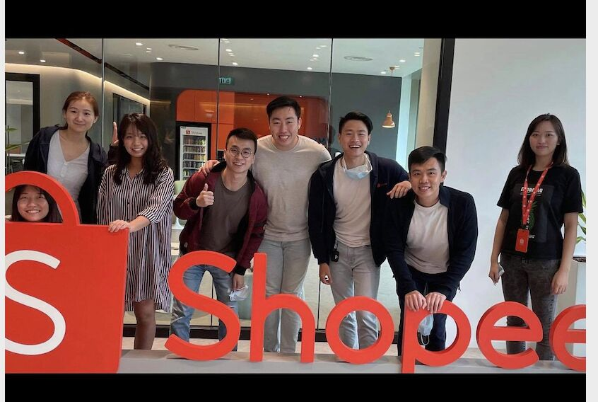
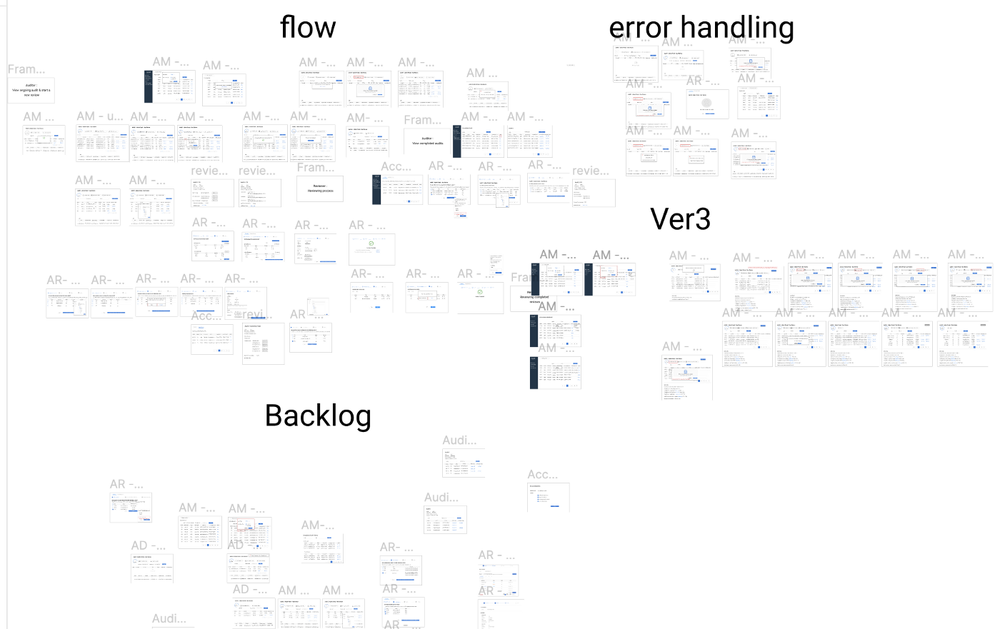
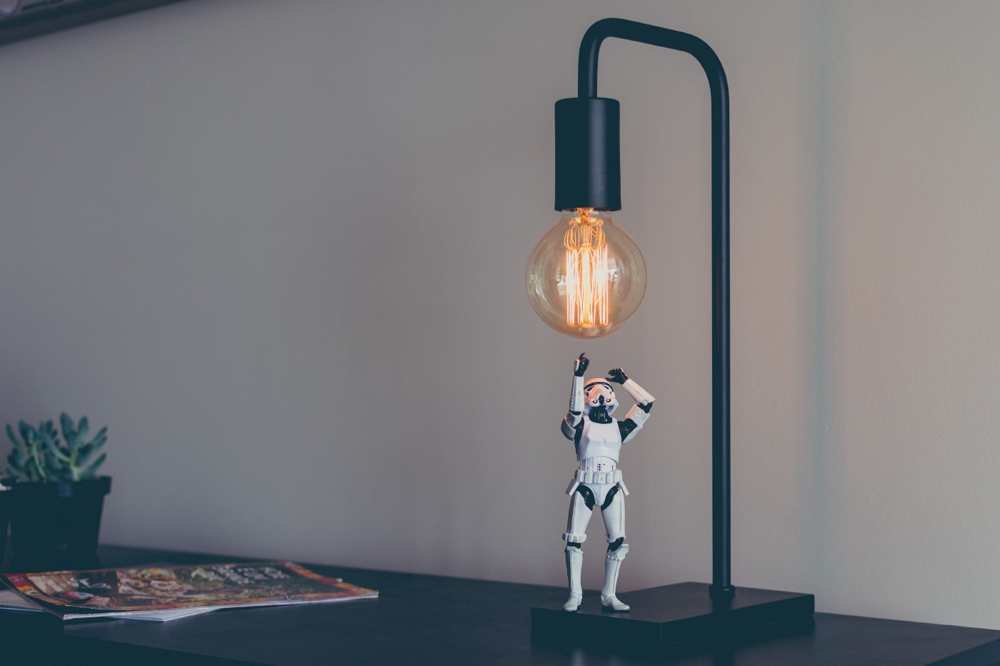

I should mark today as one of my best days. I never thought my personal happiness would depend on a product requirement document (PRD). After revising a PRD for god-know-how-many times under a tight deadline and constant stress to move to a new house, coupled with some nights working until 4 am and periodic dreams of failing to transfer the requirements to our developers, I finally made it.
No more revisions, my friends.
I have been working as a product manager intern for Shopee Ltd. Shopee is an e-commerce giant under Seagroup, operating in eight Asian countries and Brazil. I have been here for five weeks. I joined the user/account team, and I have been initially focusing on SOUP, which is Shopee’s access control system that hosts thousands of employees's access control.
What is an access control system? That’s exactly what I was thinking initially. Imagine Shopee has hundreds of different teams and sub-teams in each region. An access control system is a one-stop place for teams to streamline the process of managing access of employees, ensure security and increase business efficiency by allowing company employees to quickly apply for roles across different regions and teams.
When I was three weeks into the company, Patrick, my manager, trusted me enough to let me take over a big project, which is to build an audit system under SOUP. Usually, after a PM gets business requirements from stakeholders, they will draft a PRD to include all the requirements and product design before transferring it to developers for deployment.
An audit system is a big part in access control. In Shopee, auditors have to go through a biannual review to guarantee the right user has the right role, and the right role has the right permission. This may sound simple, but imagine when you have around 24,000 users; it isn’t much fun. The audit system is, therefore, requested to save the day, in the hope it will automate this whole manual process while ensuring utmost accuracy.
When I joined the call with our auditors, who requested this feature, we made sure to capture their expectations and clarified feature requirements, as well as feature scope. I was sure I understood their expectations, and they thought so, too. We were both wrong.
When I look back, my first PRD was very bad, but we didn’t get many comments from the requester side. They would drop some comments here and there, but nothing too dramatic. Not until we went to the first PRD transfer with developers did I realize there were so many missing back-end details, and there was a clash between the PRD and the requesters’ expectation. Only when requesters went through the actual flow of the system did they acknowledge this is not really how they had imagined it would be. They started changing their preferences. My original PRD consisted of five main modules, which were thought to be very well-defined for the sake of auditors’ use, but we cut two modules and, eventually, arrived at two modules only.
Overall, the clients share the same big idea about what and how the audit system should work, but they have minor differences when it comes to some smaller details (or what we think are small details, until they drastically changed the whole thing). I felt kind of bad after the first review, because our developers were confused, due to a lot of inconsistency and missing logic. The product scope was too big for less than two months left. Our resources are meager, with only one front-end developer and two back-end developers in SOUP.
After the first review, I revised the PRD. This time, I tried to communicate with our stakeholders as much as possible. Patrick scheduled another call with them after my second PRD, as we were more careful now before transferring to our developers. What started off as around 20 pages of mock-ups now turned into a whole lot more, as you can see from my messy Figma:
My very big lesson is you should never trust the business stakeholders, really. Even if they send you a very detailed business requirements document (BRD), and schedule the first and second meetings with you to clarify their expectations, never stop there. It will be better to not hastily assume you have understood their expectations and jump right off into writing the PRD. In the future, I would definitely approach it by doing the mock-up first, with no documents, and make requesters go through the actual flow, note their concerns and their changes in preferences, and revise the mock-up until it’s perfect before diving into the PRD.
Most of my time working until 3 am was because, for each change, big or small, it would have an effect on the entire system design, so I had to modify not only the mock-up, but also the messy PRD and the logic behind it.
What differentiates an excellent PM from an OK PM?
I asked this question to many PMs, including those from Microsoft, GoJek and KMS Tech. They always told me quite similar things. It varies from company to company, yet the ability to communicate with both business stakeholders and developers surely plays the winning card. This is true, but I never quite understood it, because it sounds quite general. I know I need business skills and some understanding about tech, but I never realized what exactly this was, until I dove myself into this project.
What to understand about tech
“Think from the perspective of a developer. If they look into your PRD requirement, would they know right away how to code it?” Wise words from Patrick.
Even for the most seemingly obvious thing, we need to be able to know where this data coming from. For example, a user ID is not just a user ID. How is it created from the back end? At what point does it appear in the front end? I probably could have written a much more detailed and clear PRD at the beginning, had I acquired more knowledge about how the back end works, and how data is stored and generated. This would not only help to better understand how your product is being built at its core, but also how to estimate the effort of development when talking to business stakeholders, specifically. This is super-helpful when requesters have fancy product requirements, while your team only has limited resources.
What to understand when talking to business stakeholders
The best product will be those allowing users to use without having to read or figure out too much on their own. The product should be user friendly and instinctive, and it should minimize any complexity involved while in use. It is also crucial to keep looking for alternative use cases and brainstorm how the product can maximize the user experience.
*PMs can be reluctant when asked to change their product design. But we are building it for our users, not ourselves.
While user experience is crucial, I find it very easy to fall into the trap of siding with users and forgetting you are also representing people on the development team. In my case, we were debating between the two ways to let reviewers update a user: whether to update a user on the spot using inline edit, or make them update batch users by uploading a CSV file. The former is, apparently, more user friendly and convenient, but in a business case when reviewers have to check thousands of users at a time, inline edit is not ideal. It would be best if we could do both features to optimize user experience, but again, the limited resources come into play, so we have to decide which option comes first.
While user experience is crucial, remember you are not only representing your users, but there are other stakeholders you should keep in mind, as well.
Do research on edge cases
Another trap I fell into is I imagined the perfect route for the product without taking edge cases into much consideration. Edge cases here can include how your product handles empty state, errors or overload state. In each scenario, the logic behind the scene definitely changes and can be tricky. A great product manager (such as Patrick) is someone who can think of thousands of edge cases while communicating with business stakeholders and understand how the workflow will alter in between.
No one has time for your detailed PRD
It’s a sad fact, but developers won’t have time to read a detailed PRD, regardless of how much effort you put into it. As a PM, it is important to do a detailed PRD, because developers will need to refer to small details during the development process. But how can we make developers have a grasp of what we are building, thereby allowing them to be able to estimate the effort as soon as possible?
I tried to put an overall mock-up flow at the beginning of my PRD, so developers can have an overview of how the whole thing works before writing detailed descriptions for each feature functionality. Visuals definitely do a better job than words.
For a product with more than one type of user (in this case, both reviewers and auditors are our clients), a PM needs to thoroughly understand how a change in the system can affect the other party. Developers will spend much of the time in the PRD review asking questions in order to save some time reading 10 pages, so a PM must make sure she/he understands all the logic behind the scene, any hidden problems that might arise, all use cases, and why (most important) the current product design is the most optimal — considering other factors, such as available resources, business requirements, user experience, etc.
The ability to synthesize information
This is such an important skill that I can’t stress it enough; I’m still trying to improve it day by day. In some discussions, when a lot of information from different stakeholders is being thrown at you, you must make sure you have an idea of what they are talking about. Even if you don’t quite understand everything (such as in some technical discussions), it is important to, at least, have a sense of what they are trying to convey, then confirm with them by saying something such as: “Here is what I understand from what you are saying. Is this correct?”
I was so happy when I got the message that said: “The PRD looks great! We are good to go!”
I felt like a stone on top of my chest was lifted up. It can get frustrating and discouraging when you fail to transfer the product at first try, but I think what is important is the experience taken away from it. Being a great product manager is no easy task, but once you are able to take up the challenge, you’ll feel this rewarding feeling, and a great sense of responsibility toward your client and your team. Once the product comes out of the paper, you might even feel extreme happiness, when you have been able to work with an awesome team to bring something to life.
The past two weeks were by no means easy, but what I got from it was so valuable. Also, if you are someone’s manager out there, please be like Patrick. He trusted me, and that motivated me a lot to deliver this project as best as I could.